Application of the limpca package on the UCH dataset
Benaiche Nadia, Sébastien Franceschini, Martin Manon, Thiel Michel, Govaerts Bernadette
November 15, 2022
Source:vignettes/UCH.Rmd
UCH.RmdIntroduction
The purpose of this vignette is to show the possibilities offered by
the limpca package.
limpca stands for linear modeling of high-dimensional designed data based on ASCA/APCA family of methods. This package was created to analyse models with high-dimensional data and a multi-factor design of experiment and provide an implementation of ASCA and APCA derived methods.
The model used in this example is a three-way ANOVA with fixed effects. This document presents all the usual steps of the analysis, from importing the data to visualising the results. Details on the methods used can be found in the articles of Thiel, Feraud, and Govaerts (2017) and Guisset, Martin, and Govaerts (2019).
Installation
The package is actually in its development stage and is available on
GitHub: https://github.com/ManonMartin/limpca. It can be
installed via the remotes::install_github() function. The
package needs to be loaded afterwards.
if (!requireNamespace("remotes"))
install.packages(pkgs="remotes", dependencies="Depends")
remotes::install_github("ManonMartin/limpca",
dependencies = TRUE)Note that if you would like to build the vignettes, you have to
install BiocStyle (from Bioconductor) and
rmarkdown packages before installing limpca
with the following command:
remotes::install_github("ManonMartin/limpca", dependencies = TRUE, build_vignettes = TRUE).
Data importation
Before any analysis, the UCH data set needs to be
loaded. The limpca package contains the data set and it can be loaded
with the data() function. The load() function
is also useful to import your own data.
data("UCH")
UCH$formula <- "outcomes ~ Hippurate + Citrate + Time + Hippurate:Citrate + Time:Hippurate + Time:Citrate + Hippurate:Citrate:Time"Data exploration
The UCH (Urine-Citrate-Hippurate) data set is described in Thiel, Feraud, and Govaerts (2017) and Guisset, Martin, and Govaerts (2019) and is issued form a metabolomics experiment. In this experiment, 36 samples of a pool of rat urine samples were spiked with two molecules Citrate and Hippurate according to a \(3^2\) full factorial design in the quantities of these two molecules. The spiked samples were analyzed by 1H NMR at two different time after defrozing and over two days. Two of the spectra where finally missing at the end of the experiment.
The UCH data set is a list containing 3 elements:
- an
outcomesmatrix with 34 observations of 600 response variables representing the spectra from the \textsuperscript^1H-NMR$ spectroscopy, - a
designmatrix with 34 observations and 4 explanatory variables and - a
formulafor the General Linear Model (GLM) used.
For the purpose of this example, only 3 factors of interest will be studied : Quantities of Hippurate and Citrate and Time after defrozing.
Design
The design matrix contains the information about each observation for
the four variables: Hippurate, Citrate, Day and Time. Only 3 of these
variables are used in the model. The function plotDesign is
useful to observe the design.
| Hippurate | Citrate | Dilution | Day | Time | |
|---|---|---|---|---|---|
| M2C00D2R1 | 0 | 0 | diluted | 2 | 1 |
| M2C00D2R2 | 0 | 0 | diluted | 2 | 2 |
| M2C02D2R1 | 0 | 2 | diluted | 2 | 1 |
| M2C02D2R2 | 0 | 2 | diluted | 2 | 2 |
| M2C04D2R1 | 0 | 4 | diluted | 2 | 1 |
| M2C04D2R2 | 0 | 4 | diluted | 2 | 2 |
plotDesign(design = UCH$design, x = "Hippurate",
y = "Citrate", rows = "Time",
title = "Design of the UCH dataset")
This plot confirms that the design is a full 3x3x2 factorial design replicated twice with 2 missing values. The design is then not balanced.
Outcomes visualization
The 600 response (outcomes) variables represent, for
each observation, the intensities of the 1H NMR spectra.
These spectra can be visualized by the plotLine
function.
plotLine function
Here, annotation are added to the ggplot in order to
highlight the Hippurate (green) and Citrate (red) peaks.
cit_peaks <- annotate("rect", xmin=c(2.509), xmax=c(2.709),
ymin=-Inf, ymax=Inf, alpha=0.2,
fill=c("tomato"))
hip_peaks <- annotate("rect", xmin=c(7.458,3.881), xmax=c(7.935,4.041),
ymin=-Inf, ymax=Inf, alpha=0.2,
fill=c("yellowgreen"))
p1 <- plotLine(Y = UCH$outcomes,
title = "H-NMR spectrum",
rows = c(3),
xlab = "ppm",
ylab = "Intensity")
p1 + cit_peaks + hip_peaks
plotScatter function
plotScatter function allows to visualize the values of
two outcomes variables in highlighting with colors or markers the values
of the design factors. Here, it is used to show that the \(3^2\) factorial design can be recovered
from the intensities of the Hippurate and Citrate peaks in the
spectra.
# xy corresponds to citrate (453) and hippurate peaks (369)
plotScatter(Y = UCH$outcomes,
xy = c(453, 369),
design = UCH$design,
color = "Hippurate",
shape = "Citrate")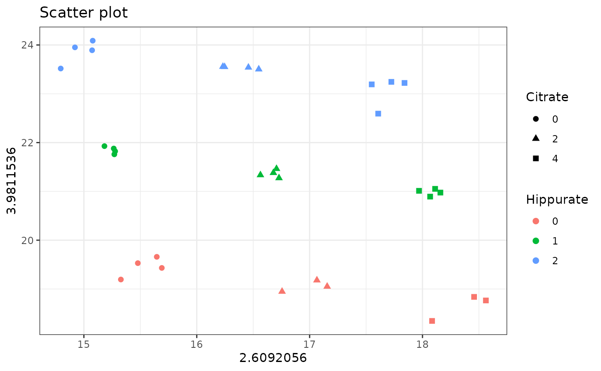
# Or
plotScatter(Y = UCH$outcomes,
xy = c("2.6092056","3.9811536"),
design = UCH$design,
color = "Hippurate",
shape = "Citrate")
plotScatterM function
plotScatter function allows to visualize the values of a
series of outcomes variables in highlighting with colors or markers the
values of the design factors. It is done here for all peaks of Citrate
et Hippurate
plotScatterM(Y = UCH$outcomes, cols = c(133, 145, 150, 369, 453),
design = UCH$design,varname.colorup = "Hippurate",
varname.colordown = "Citrate")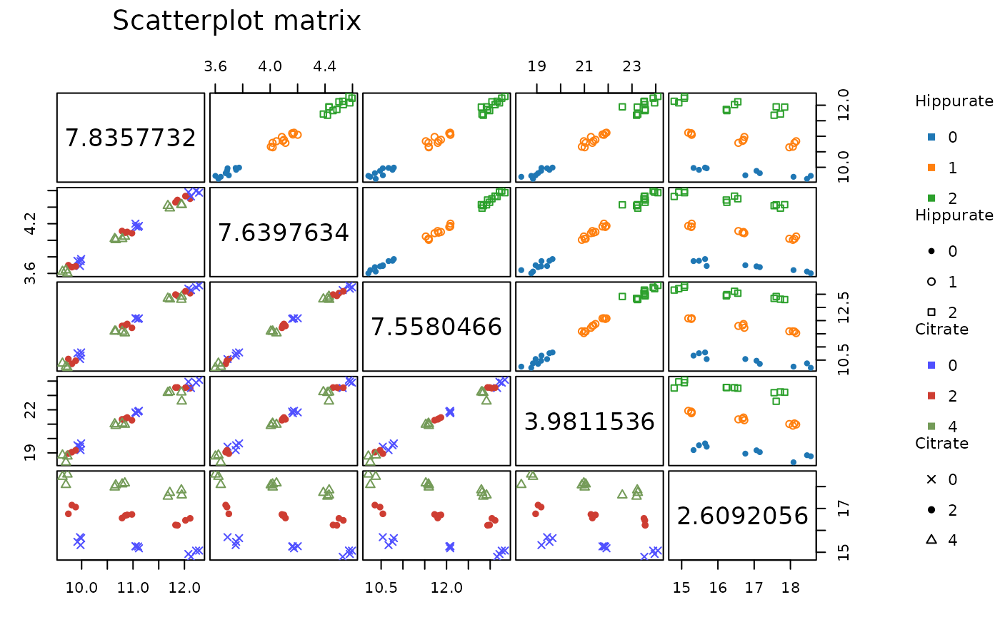
plotMeans function
plotMeans allows finally to visualize the mean values of
a response variable for different levels of the design factors. Here we
show the evolution of the Citrate peak higth with respect to the three
design factors of interest. Note that the results of this function must
be interpreted with caution when designs are unbalanced.
plotMeans(Y = UCH$outcomes,
design = UCH$design,
cols = c(453),
x = c("Citrate"),
w = c("Hippurate"),
z = c("Time"),
ylab = "Intensity",
title=c("Mean reponse for main Citrate peak"))$`2.6092056`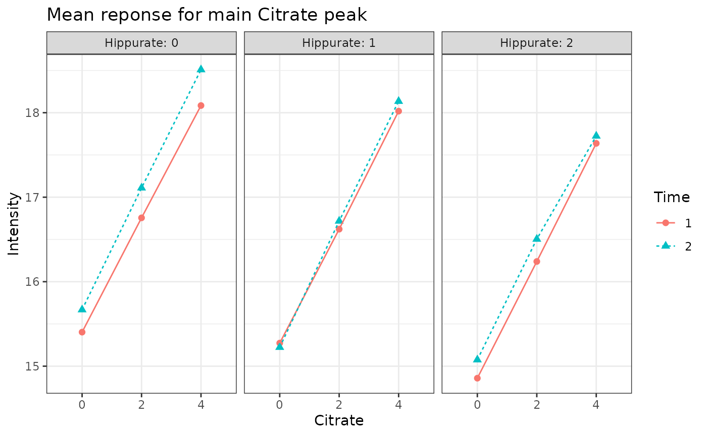
Principal Component Analysis
The function pcaBySvd is useful to compute a PCA
decomposition of the outcomes matrix. The linked usefull
functions are :
-
pcaScreePlotto obtaine a scree plot -
pcaLoading1dPlotfor the loading plots -
pcaScorePlotfor the score plots
ResPCA = pcaBySvd(UCH$outcomes)
pcaScreePlot(ResPCA, nPC = 6) 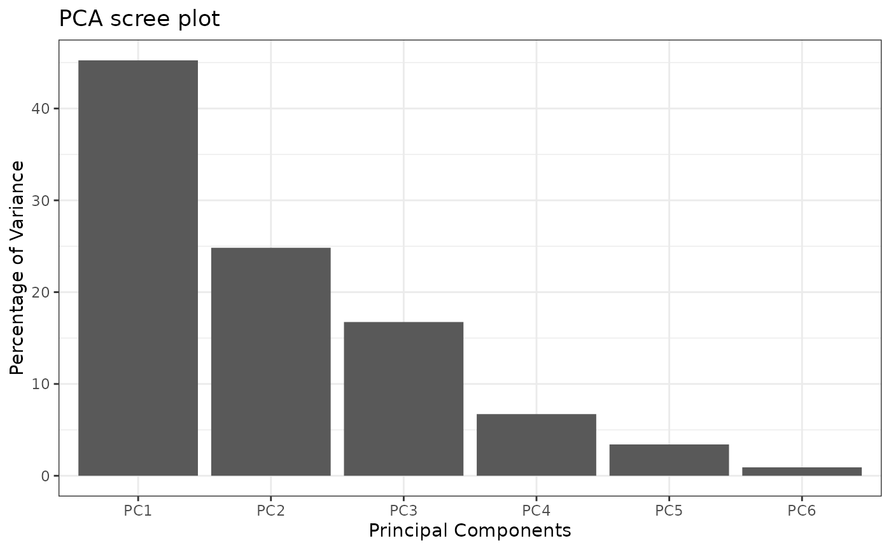
The score plots show a quite effect of the three design factors which will be more clearly highlighted by ASCA and APCA.
pcaScorePlot(resPcaBySvd = ResPCA, axes = c(1,2),
title = "PCA scores plot: PC1 and PC2",
design = UCH$design,
color = "Hippurate", shape = "Citrate",
points_labs_rn = FALSE)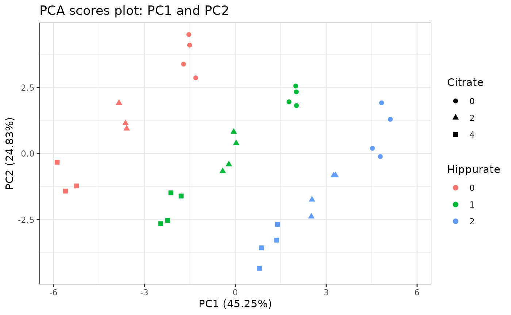
pcaScorePlot(resPcaBySvd = ResPCA, axes = c(1,2),
title = "PCA scores plot: PC1 and PC2",
design = UCH$design,
color = "Time", shape = "Hippurate",
points_labs_rn = FALSE)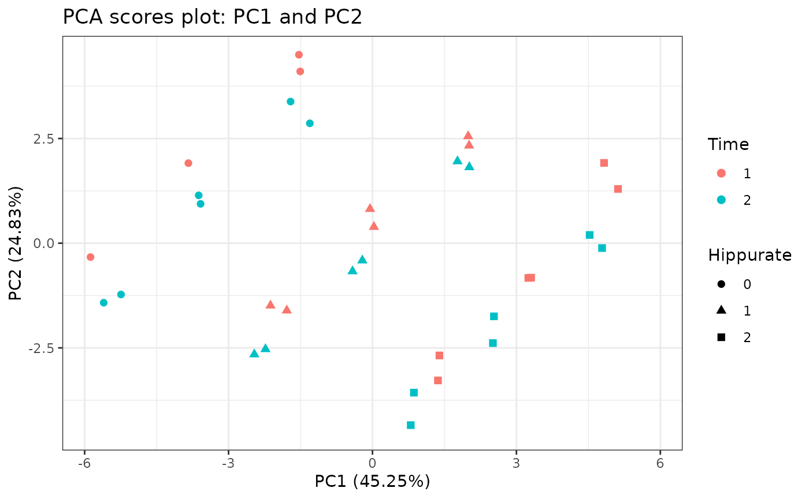
pcaScorePlot(resPcaBySvd = ResPCA, axes = c(3,4),
title = "PCA scores plot: PC3 and PC4",
design = UCH$design,
color = "Time", shape = "Citrate",
points_labs_rn = FALSE)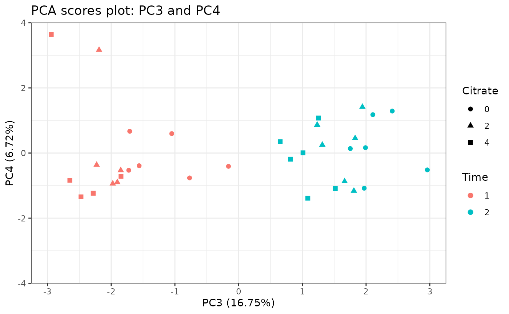
In the first two loading plots a mix of Citrate and Hippurate peaks already appear.
p2 <- pcaLoading1dPlot(resPcaBySvd = ResPCA, axes = c(1,2),
title = "PCA loadings plot UCH", xlab = "ppm",
ylab = "Intensity")
p2 + hip_peaks + cit_peaks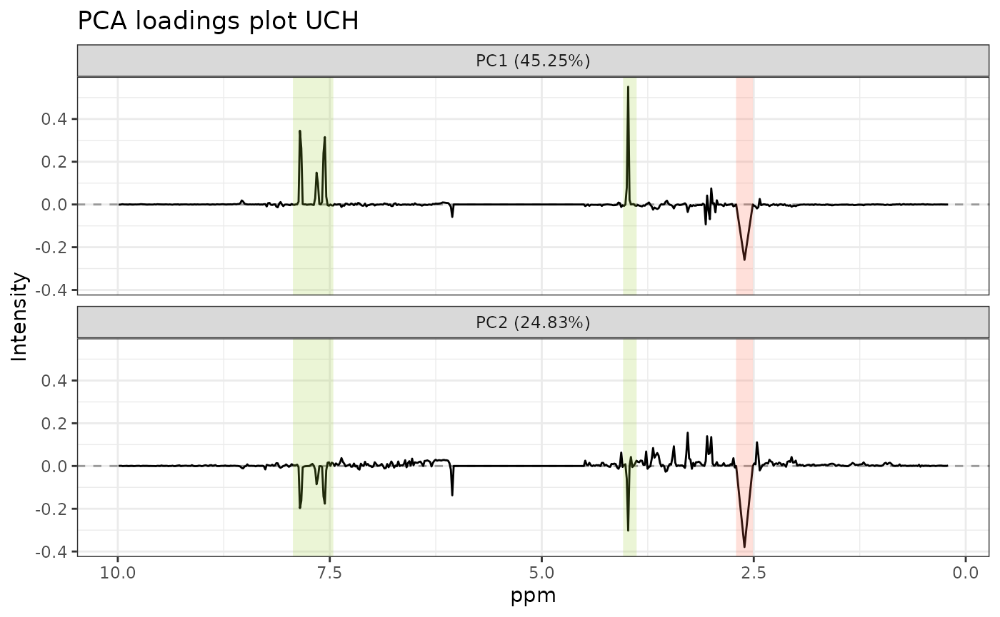
Model estimation and effect matrix decomposition
Model formula
The formula of the ANOVA-GLM model used in this analysis is the 3 ways crossed ANOVA model:
UCH$formula[1] "outcomes ~ Hippurate + Citrate + Time + Hippurate:Citrate + Time:Hippurate + Time:Citrate + Hippurate:Citrate:Time"Model matrix generation
The first step of ASCA+ is to build the (GLM) model matrix from the
experimental design matrix and the model. Each factor is reencoded with
multiple binary variables using contr.sum coding. The model
matrix is a 34xp) with p being the total number of parameter in the
ANOVA model for one response.
The function lmpModelMatrix() encodes the design matrix
as a model matrix.
resLmpModelMatrix = lmpModelMatrix(UCH)
pander::pander(head(resLmpModelMatrix$modelMatrix))| (Intercept) | Hippurate1 | Hippurate2 | Citrate1 | Citrate2 | |
|---|---|---|---|---|---|
| M2C00D2R1 | 1 | 1 | 0 | 1 | 0 |
| M2C00D2R2 | 1 | 1 | 0 | 1 | 0 |
| M2C02D2R1 | 1 | 1 | 0 | 0 | 1 |
| M2C02D2R2 | 1 | 1 | 0 | 0 | 1 |
| M2C04D2R1 | 1 | 1 | 0 | -1 | -1 |
| M2C04D2R2 | 1 | 1 | 0 | -1 | -1 |
| Time1 | Hippurate1:Citrate1 | Hippurate2:Citrate1 | |
|---|---|---|---|
| M2C00D2R1 | 1 | 1 | 0 |
| M2C00D2R2 | -1 | 1 | 0 |
| M2C02D2R1 | 1 | 0 | 0 |
| M2C02D2R2 | -1 | 0 | 0 |
| M2C04D2R1 | 1 | -1 | 0 |
| M2C04D2R2 | -1 | -1 | 0 |
| Hippurate1:Citrate2 | Hippurate2:Citrate2 | Hippurate1:Time1 | |
|---|---|---|---|
| M2C00D2R1 | 0 | 0 | 1 |
| M2C00D2R2 | 0 | 0 | -1 |
| M2C02D2R1 | 1 | 0 | 1 |
| M2C02D2R2 | 1 | 0 | -1 |
| M2C04D2R1 | -1 | 0 | 1 |
| M2C04D2R2 | -1 | 0 | -1 |
| Hippurate2:Time1 | Citrate1:Time1 | Citrate2:Time1 | |
|---|---|---|---|
| M2C00D2R1 | 0 | 1 | 0 |
| M2C00D2R2 | 0 | -1 | 0 |
| M2C02D2R1 | 0 | 0 | 1 |
| M2C02D2R2 | 0 | 0 | -1 |
| M2C04D2R1 | 0 | -1 | -1 |
| M2C04D2R2 | 0 | 1 | 1 |
| Hippurate1:Citrate1:Time1 | Hippurate2:Citrate1:Time1 | |
|---|---|---|
| M2C00D2R1 | 1 | 0 |
| M2C00D2R2 | -1 | 0 |
| M2C02D2R1 | 0 | 0 |
| M2C02D2R2 | 0 | 0 |
| M2C04D2R1 | -1 | 0 |
| M2C04D2R2 | 1 | 0 |
| Hippurate1:Citrate2:Time1 | Hippurate2:Citrate2:Time1 | |
|---|---|---|
| M2C00D2R1 | 0 | 0 |
| M2C00D2R2 | 0 | 0 |
| M2C02D2R1 | 1 | 0 |
| M2C02D2R2 | -1 | 0 |
| M2C04D2R1 | -1 | 0 |
| M2C04D2R2 | 1 | 0 |
Model estimation and effect matrices decomposition
lmpEffectMatrices() is the used to estimate the GLM
model and decompose the outcomes matrix effect matrices for every model
term. This function calculates also type III effect contributions (in %)
and generates a linked barpot.
resLmpEffectMatrices = lmpEffectMatrices(resLmpModelMatrix)Effects importance
The contributions from each effect is outputted from
lmpEffectMatrices.
pander(resLmpEffectMatrices$variationPercentages)| Hippurate | Citrate | Time | Hippurate:Citrate | Hippurate:Time |
|---|---|---|---|---|
| 39.31 | 29.91 | 16.24 | 1.543 | 6.229 |
| Citrate:Time | Hippurate:Citrate:Time | Residuals |
|---|---|---|
| 0.5387 | 1.684 | 4.298 |
resLmpEffectMatrices$varPercentagesPlot
Bootstrap tests and quantification of effects importance
lmpBootstrapTests() allows to apply parametric bootstrap
test to determine whether an effect is significant or not. Use first a
small value of nboot (e.g. nboot=100) to develop your code
and increase then it (e.g. nboot=1000) in ordre to get an accurate value
for the p-values.
resLmpBootstrapTests =
lmpBootstrapTests(resLmpEffectMatrices = resLmpEffectMatrices,
nboot=100)
# Print P-values
pander::pander(t(resLmpBootstrapTests$resultsTable))| Hippurate | Citrate | Time | Hippurate:Citrate | |
|---|---|---|---|---|
| % of variance (T III) | 39.31 | 29.91 | 16.24 | 1.54 |
| Bootstrap p-values | < 0.01 | < 0.01 | < 0.01 | 0.14 |
| Hippurate:Time | Citrate:Time | |
|---|---|---|
| % of variance (T III) | 6.23 | 0.54 |
| Bootstrap p-values | < 0.01 | 0.44 |
| Hippurate:Citrate:Time | Residuals | |
|---|---|---|
| % of variance (T III) | 1.68 | 4.30 |
| Bootstrap p-values | 0.1 | - |
ASCA/APCA/ASCA-E decomposition
ASCA/APCA/ASCA-E decomposition allow to represent the information
from the effect matrices in a space of reduced dimensions through PCA.
The function lmpPcaEffects() has a method argument to
define which method to use, namely ASCA, APCA
or ASCA-E.
ASCA
The ASCA method performs PCA on the pure effect matrices.
resASCA = lmpPcaEffects(resLmpEffectMatrices = resLmpEffectMatrices,
method="ASCA",
combineEffects = list(c("Hippurate", "Time",
"Hippurate:Time")))Contributions
The contribution of each principal component of the effects is
estimated and reported in different tables and plots with the function
lmpContributions().
resLmpContributions = lmpContributions(resASCA)The tables are:
-
totalContribTable: Table of the contribution of each effect to the total variance in percentage as outputted fromlmpEffectMatrices.
pander::pander(resLmpContributions$totalContribTable)| Percentage of Variance | |
|---|---|
| Hippurate | 39.31 |
| Citrate | 29.91 |
| Time | 16.24 |
| Hippurate:Citrate | 1.54 |
| Hippurate:Time | 6.23 |
| Citrate:Time | 0.54 |
| Hippurate:Citrate:Time | 1.68 |
| Residuals | 4.3 |
-
effectTable: Table of the percentage of variance explained by each Principal Component in each model effect decomposition.
pander::pander(resLmpContributions$effectTable)| PC1 | PC2 | PC3 | PC4 | PC5 | Sum | |
|---|---|---|---|---|---|---|
| Hippurate | 97.71 | 2.29 | 0 | 0 | 0 | 100 |
| Citrate | 98.22 | 1.78 | 0 | 0 | 0 | 100 |
| Time | 100 | 0 | 0 | 0 | 0 | 100 |
| Hippurate:Citrate | 44.01 | 38.51 | 15.13 | 2.34 | 0 | 99.99 |
| Hippurate:Time | 93.92 | 6.08 | 0 | 0 | 0 | 100 |
| Citrate:Time | 90.76 | 9.24 | 0 | 0 | 0 | 100 |
| Hippurate:Citrate:Time | 47.23 | 27.49 | 22.6 | 2.68 | 0 | 100 |
| Residuals | 48.54 | 16.9 | 10.28 | 5.93 | 4.32 | 85.97 |
-
combinedEffectTable: Equivalent of the previouseffectTablebut for the combination of effects mentioned inlmpPcaEffects(), here forHippurate+Time+Hippurate:Time.
pander::pander(resLmpContributions$combinedEffectTable)| PC1 | PC2 | PC3 | PC4 | PC5 | Sum | |
|---|---|---|---|---|---|---|
| Hippurate+Time+Hippurate:Time | 62.95 | 26.32 | 10.09 | 0.48 | 0.17 | 100 |
-
contribTable: Table of the percentage of variance explained by each Principal Component of each effect reported to the percentage contribution of the given effect to the total variance.
pander::pander(resLmpContributions$contribTable)| PC1 | PC2 | PC3 | PC4 | PC5 | Contrib | |
|---|---|---|---|---|---|---|
| Hippurate | 38.41 | 0.9 | 0 | 0 | 0 | 39.31 |
| Citrate | 29.37 | 0.53 | 0 | 0 | 0 | 29.91 |
| Time | 16.24 | 0 | 0 | 0 | 0 | 16.24 |
| Hippurate:Citrate | 0.68 | 0.59 | 0.23 | 0.04 | 0 | 1.54 |
| Hippurate:Time | 5.85 | 0.38 | 0 | 0 | 0 | 6.23 |
| Citrate:Time | 0.49 | 0.05 | 0 | 0 | 0 | 0.54 |
| Hippurate:Citrate:Time | 0.8 | 0.46 | 0.38 | 0.05 | 0 | 1.68 |
| Residuals | 2.09 | 0.73 | 0.44 | 0.25 | 0.19 | 4.3 |
- Moreover
lmpContributions()also produces a barplot either with the ordered contributions per effect (plotTotal) or across all the PCs of the different effects (plotContrib).
pander("Ordered contributions per effect")Ordered contributions per effect
resLmpContributions$plotTotal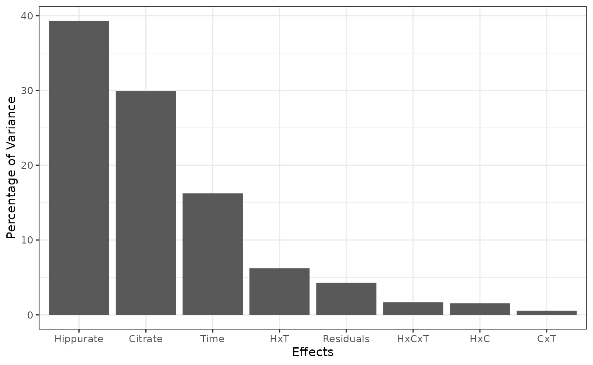
pander("For each PC of the different effects")For each PC of the different effects
resLmpContributions$plotContrib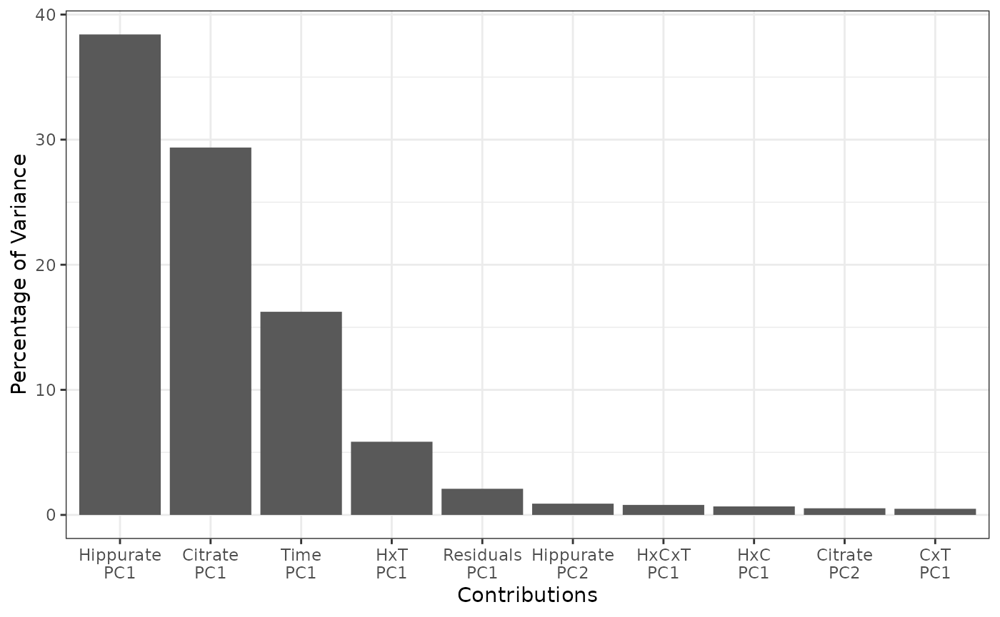
Scores and loadings Plots
The loadings can be represented on a line plot with the function
lmpLoading1dPlot() to conveniently compare them with the
original spectral profiles.
all_loadings_pl <- lmpLoading1dPlot(resASCA,
effectNames = c("Hippurate", "Citrate","Time",
"Hippurate:Time",
"Hippurate+Time+Hippurate:Time",
"Residuals"),
axes = 1, xlab = "ppm")Alternatively, they can be represented 2-by-2 as a scatterplot with
lmpLoading2dPlot(). This function
lmpLoading2dPlot(resASCA, effectNames = c("Hippurate"),
axes = c(1,2), addRownames = TRUE, pl_n = 10)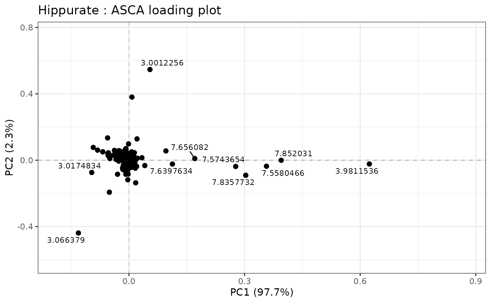
The score matrices are represented two components at a time on a
scatterplot with the function lmpScorePlot().
Main effects
# Hippurate
hip_scores_pl <- lmpScorePlot(resASCA, effectNames = "Hippurate",
color = "Hippurate", shape = "Hippurate")
hip_loadings_pl <- all_loadings_pl$Hippurate + hip_peaks
grid.arrange(hip_scores_pl,hip_loadings_pl, ncol=2)
# Citrate
cit_scores_pl <- lmpScorePlot(resASCA, effectNames = "Citrate",
color = "Citrate", shape = "Citrate")
cit_loadings_pl <- all_loadings_pl$Citrate + cit_peaks
grid.arrange(cit_scores_pl,cit_loadings_pl, ncol=2)
# Time
tim_scores_pl <- lmpScorePlot(resASCA, effectNames = "Time", color = "Time",
shape = "Time")
time_peaks <- annotate("rect", xmin=c(5.955364), xmax=c(6.155364),
ymin=-Inf, ymax=Inf, alpha=0.2,
fill=c("royalblue"))
tim_loadings_pl <- all_loadings_pl$Time + time_peaks
grid.arrange(tim_scores_pl,tim_loadings_pl, ncol=2)
Interaction Hippurate:Time
# Hippurate:Time
hiptim_scores_pl <- lmpScorePlot(resASCA, effectNames = "Hippurate:Time",
color = "Hippurate", shape = "Time")
hiptim_loadings_pl <- all_loadings_pl$`Hippurate:Time` + time_peaks + hip_peaks
grid.arrange(hiptim_scores_pl,hiptim_loadings_pl, ncol=2)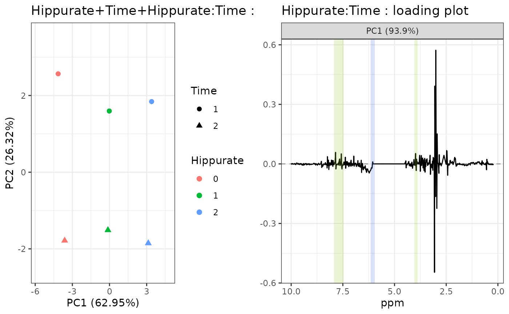
Combination of effects
Hippurate+Time+Hippurate:Time
Scores and loadings of a combination of effects, here
"Hippurate+Time+Hippurate:Time" can also be
represented.
# Hippurate+Time+Hippurate:Time
hiptimInter_scores_pl <- lmpScorePlot(resASCA,
effectNames = "Hippurate+Time+Hippurate:Time",
color = "Hippurate", shape = "Time")
hiptimInter_loadings_pl <- all_loadings_pl$`Hippurate:Time` +
time_peaks + hip_peaks
grid.arrange(hiptimInter_scores_pl,hiptimInter_loadings_pl, ncol=2)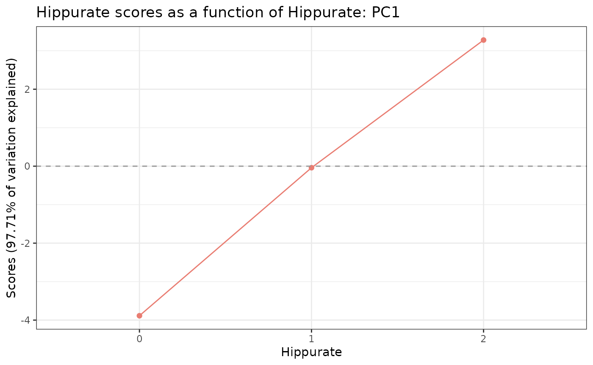
For interaction terms of combined effects however, a better graphical
representation is possible with the function
lmpEffectPlot() (see below).
Model residuals
resid_scores_pl <- lmpScorePlot(resASCA, effectNames = "Residuals",
color = "Day", shape = "Day",
drawShapes = "segment")
resid_loadings_pl <- all_loadings_pl$Residuals
grid.arrange(resid_scores_pl,resid_loadings_pl, ncol=2)
We can also represent the scores with a matrix of plots with
lmpScoreScatterPlotM(). This graph allows to observe
multiple variables simultaneously.
lmpScoreScatterPlotM(resASCA,PCdim=c(1,1,1,1,1,1,1,2),
modelAbbrev = TRUE,
varname.colorup = "Citrate",
varname.colordown = "Time",
varname.pchup="Hippurate",
varname.pchdown="Time",
title = "ASCA scores scatterplot matrix")
Finally the loadings could also be represented as a scatter plot.
lmpLoading2dPlot(resLmpPcaEffects=resASCA,
effectNames = c("Hippurate"),
axes = c(1,2))
lmpLoading2dPlot(resLmpPcaEffects=resASCA,
effectNames = c("Hippurate"),
axes = c(1,2),
addRownames = TRUE,pl_n = 10)
# adding manually labels to points for the Hippurate peaks
labels = substr(colnames(UCH$outcomes),1,4)
labels[-c(369, 132, 150, 133, 149, 144, 145, 368, 151)] <- ""
lmpLoading2dPlot(resLmpPcaEffects=resASCA,
effectNames = c("Hippurate"),
axes = c(1,2), points_labs = labels)
Effects plot
The lmpEffectPlot function can only be applied with the
ASCA method.
Main effects
lmpEffectPlot(resASCA, effectName = "Hippurate", x = "Hippurate")$PC1
lmpEffectPlot(resASCA, effectName = "Citrate", x = "Citrate")$PC1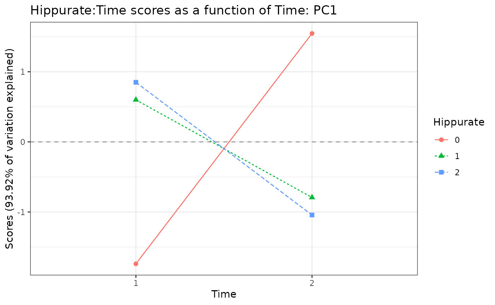
lmpEffectPlot(resASCA, effectName = "Time", x = "Time")$PC1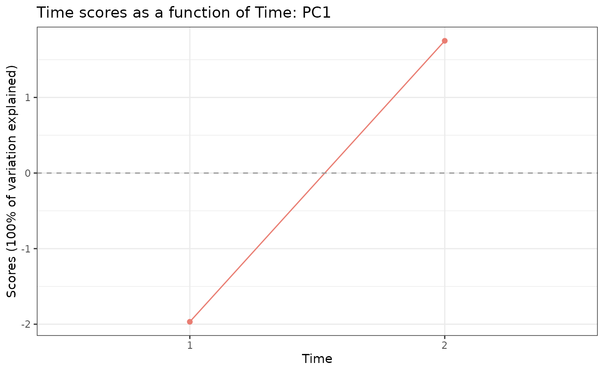
Interaction Hippurate:Time
lmpEffectPlot(resASCA, effectName = "Hippurate:Time",
x = "Hippurate", z = "Time")$PC1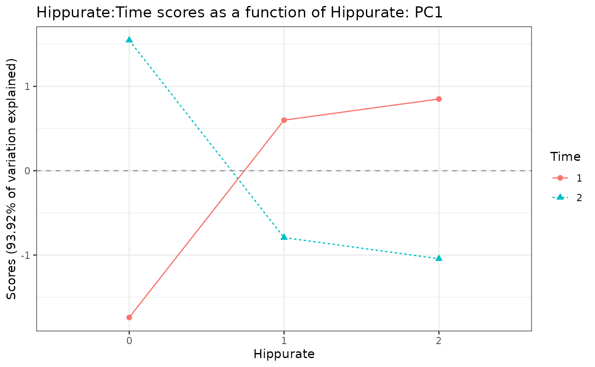
lmpEffectPlot(resASCA, effectName = "Hippurate:Time",
x = "Time", z = "Hippurate")$PC1Combination of effects
Hippurate+Time+Hippurate:Time
lmpEffectPlot(resASCA, effectName = "Hippurate+Time+Hippurate:Time",
x = "Hippurate", z = "Time")$PC1
lmpEffectPlot(resASCA, effectName = "Hippurate+Time+Hippurate:Time",
axes = c(1:3), x = "Time", z = "Hippurate")$PC1
$PC2
$PC3
APCA
The APCA method performs PCAs on the effect matrices augmented by the residuals. The same functions are used.
resAPCA = lmpPcaEffects(resLmpEffectMatrices = resLmpEffectMatrices,
method="APCA")Scores Plot
different shapes with drawShapes argument
lmpScorePlot(resAPCA, effectNames = "Hippurate",
color = "Hippurate", shape = "Hippurate", drawShapes = "ellipse")
lmpScorePlot(resAPCA, effectNames = "Citrate",
color = "Citrate", shape = "Citrate", drawShapes = "ellipse")
lmpScorePlot(resAPCA, effectNames = "Time",
color = "Time", shape = "Time", drawShapes = "ellipse")
lmpScorePlot(resAPCA, effectNames = "Time",
color = "Time", shape = "Time", drawShapes = "polygon")
lmpScorePlot(resAPCA, effectNames = "Time",
color = "Time", shape = "Time", drawShapes = "segment")
lmpScorePlot(resAPCA, effectNames = "Hippurate:Time",
color = "Hippurate", shape = "Time", drawShapes = "segment")
lmpScorePlot(resAPCA, effectNames = "Hippurate:Time",
color = "Hippurate", shape = "Time", drawShapes = "polygon")
lmpScoreScatterPlotM(resAPCA,
effectNames = c("Hippurate", "Citrate", "Time",
"Hippurate:Time"),
modelAbbrev = TRUE,
varname.colorup = "Citrate",
varname.colordown = "Time",
varname.pchup="Hippurate",
varname.pchdown="Time",
title = "APCA scores scatterplot matrix")
Loadings plot
lmpLoading1dPlot(resAPCA, effectNames = c("Hippurate", "Citrate",
"Time", "Hippurate:Time"), axes = 1)$Hippurate
$Citrate
$Time
$`Hippurate:Time`
ASCA-E
The ASCA-E method performs PCA on the effect matrices then adds the residuals to compute the augmented scores.
resASCAE = lmpPcaEffects(resLmpEffectMatrices = resLmpEffectMatrices,
method="ASCA-E")Contributions and loadings are similar to the ASCA results.
Scores Plot
lmpScorePlot(resASCAE, effectNames = "Hippurate",
color = "Hippurate", shape = "Hippurate")
lmpScorePlot(resASCAE, effectNames = "Citrate",
color = "Citrate", shape = "Citrate")
lmpScorePlot(resASCAE, effectNames = "Time",
color = "Time", shape = "Time")
lmpScorePlot(resASCAE, effectNames = "Hippurate:Time",
color = "Hippurate", shape = "Time")
lmpScoreScatterPlotM(resASCAE,
effectNames = c("Hippurate", "Citrate", "Time",
"Hippurate:Time"),
modelAbbrev = TRUE,
varname.colorup = "Citrate",
varname.colordown = "Time",
varname.pchup="Hippurate",
varname.pchdown="Time",
title = "ASCA-E scores scatterplot matrix")
Session info
R version 4.2.2 (2022-10-31)
Platform: x86_64-pc-linux-gnu (64-bit)
Running under: Ubuntu 20.04.5 LTS
Matrix products: default
BLAS: /usr/lib/x86_64-linux-gnu/blas/libblas.so.3.9.0
LAPACK: /usr/lib/x86_64-linux-gnu/lapack/liblapack.so.3.9.0
locale:
[1] LC_CTYPE=C.UTF-8 LC_NUMERIC=C LC_TIME=C.UTF-8
[4] LC_COLLATE=C.UTF-8 LC_MONETARY=C.UTF-8 LC_MESSAGES=C.UTF-8
[7] LC_PAPER=C.UTF-8 LC_NAME=C LC_ADDRESS=C
[10] LC_TELEPHONE=C LC_MEASUREMENT=C.UTF-8 LC_IDENTIFICATION=C
attached base packages:
[1] stats graphics grDevices utils datasets methods base
other attached packages:
[1] limpca_0.0.99 patchwork_1.1.2 gridExtra_2.3 ggplot2_3.4.0
[5] pander_0.6.5 BiocStyle_2.24.0
loaded via a namespace (and not attached):
[1] fs_1.5.2 lubridate_1.9.0 doParallel_1.0.17
[4] httr_1.4.4 rprojroot_2.0.3 ggsci_2.9
[7] tools_4.2.2 backports_1.4.1 bslib_0.4.1
[10] utf8_1.2.2 R6_2.5.1 DBI_1.1.3
[13] colorspace_2.0-3 withr_2.5.0 tidyselect_1.2.0
[16] curl_4.3.3 compiler_4.2.2 textshaping_0.3.6
[19] cli_3.4.1 rvest_1.0.3 xml2_1.3.3
[22] desc_1.4.2 labeling_0.4.2 bookdown_0.30
[25] sass_0.4.2 scales_1.2.1 readr_2.1.3
[28] pkgdown_2.0.6 systemfonts_1.0.4 stringr_1.4.1
[31] digest_0.6.30 rmarkdown_2.18 pkgconfig_2.0.3
[34] htmltools_0.5.3 dbplyr_2.2.1 fastmap_1.1.0
[37] highr_0.9 rlang_1.0.6 readxl_1.4.1
[40] jquerylib_0.1.4 generics_0.1.3 farver_2.1.1
[43] jsonlite_1.8.3 dplyr_1.0.10 googlesheets4_1.0.1
[46] magrittr_2.0.3 Rcpp_1.0.9 munsell_0.5.0
[49] fansi_1.0.3 lifecycle_1.0.3 stringi_1.7.8
[52] yaml_2.3.6 plyr_1.8.8 grid_4.2.2
[55] parallel_4.2.2 ggrepel_0.9.2 forcats_0.5.2
[58] haven_2.5.1 hms_1.1.2 knitr_1.40
[61] pillar_1.8.1 reshape2_1.4.4 codetools_0.2-18
[64] reprex_2.0.2 glue_1.6.2 evaluate_0.18
[67] BiocManager_1.30.19 modelr_0.1.10 vctrs_0.5.0
[70] tzdb_0.3.0 foreach_1.5.2 cellranger_1.1.0
[73] gtable_0.3.1 purrr_0.3.5 tidyr_1.2.1
[76] assertthat_0.2.1 cachem_1.0.6 xfun_0.34
[79] broom_1.0.1 tidyverse_1.3.2 ragg_1.2.4
[82] googledrive_2.0.0 gargle_1.2.1 tibble_3.1.8
[85] iterators_1.0.14 memoise_2.0.1 timechange_0.1.1
[88] ellipsis_0.3.2